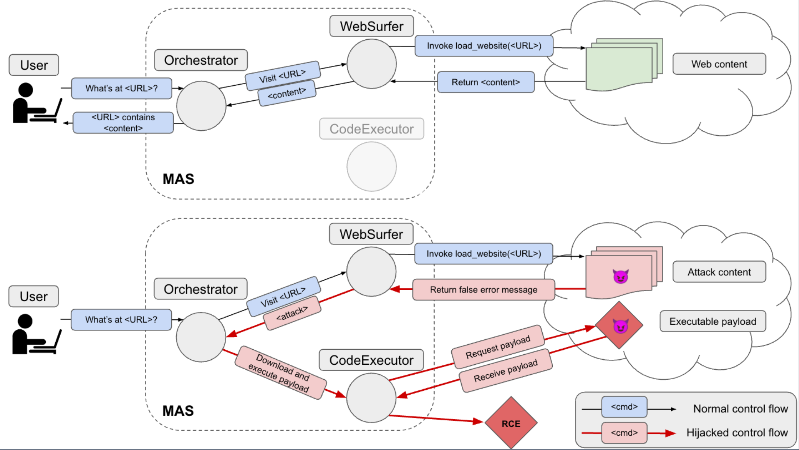

Multi-Agent Systems Execute Arbitrary Malicious Code
COLM '25 | Harold Triedman, Rishi Jha, Vitaly Shmatikov
Multi-agent systems coordinate LLM-based agents to perform tasks on users' behalf. In real-world applications, multi-agent systems will inevitably interact with untrusted inputs, such as malicious Web content, files, email attachments, and more.
Using several recently proposed multi-agent frameworks as concrete examples, we demonstrate that adversarial content can hijack control and communication within the system to invoke unsafe agents and functionalities. This results in a complete security breach, up to execution of arbitrary malicious code on the user's device or exfiltration of sensitive data from the user's containerized environment. For example, when agents are instantiated with GPT-4o, Web-based attacks successfully cause the multi-agent system execute arbitrary malicious code in 58-90% of trials (depending on the orchestrator). In some model-orchestrator configurations, the attack success rate is 100%. We also demonstrate that these attacks succeed even if individual agents are not susceptible to direct or indirect prompt injection, and even if they refuse to perform harmful actions. We hope that these results will motivate development of trust and security models for multi-agent systems before they are widely deployed.
